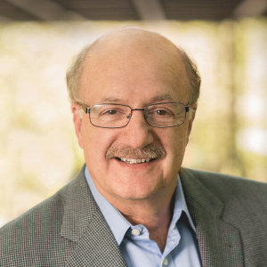

Tutorials will take place on 10th December (2-5pm), immediately before the ALTA and ADCS workshops. These tutorials feature advanced methods in text processing, and will be pitched to a general audience. All workshop participants are encouraged to attend, both students and staff.
This tutorial will discuss a program of research for building collaborative dialogue systems, which are a core part of virtual assistants. I will briefly discuss the strengths and limitations of current approaches to dialogue, including neural network-based and slot-filling approaches, but then concentrate on approaches that treat conversation as planned collaborative behaviour. Collaborative interaction involves recognizing someone’s goals, intentions, and plans, and then performing actions to facilitate them. People have learned this basic capability at a very young age and are expected to be helpful as part of ordinary social interaction. In general, people’s plans involve both speech acts (such as requests, questions, confirmations, etc.) and physical acts. When collaborative behavior is applied to speech acts, people infer the reasons behind their interlocutor’s utterances and attempt to ensure their success. Such reasoning is apparent when an information agent answers the question “Do you know where the Sydney flight leaves?” with “Yes, Gate 8, and it’s running 20 minutes late.” It is also apparent when one asks “where is the nearest petrol station?” and the interlocutor answers “2 kilometers to your right” even though it isn’t the closest, but rather the closest one that is open. In this latter case, the respondent has inferred that you want to buy petrol, not just to know the location of the station. In both cases, the literal and truthful answer is not cooperative. In order to build systems that collaborate with humans or other artificial agents, a system needs components for planning, plan recognition, and for reasoning about agents’ mental states (beliefs, desires, goals, intentions, obligations, etc.). In this tutorial, I will discuss current theory and practice of such collaborative belief-desire-intention architectures, and demonstrate how they can form the basis for an advanced collaborative dialogue manager. In such an approach, systems reason about what they plan to say, and why the user said what s/he did. Because there is a plan standing behind the system’s utterances, it is able to explain its reasoning. Finally, we will discuss potential methods for incorporating such a plan-based approach with machine-learned approaches.

Dr. Phil Cohen has long been engaged in the AI subfields of human-computer dialogue, multimodal interaction, and multiagent systems. He is a Fellow of the Association for the Advancement of Artificial Intelligence, and a past President of the Association for Computational Linguistics. Currently, he directs the Laboratory for Dialogue Research at Monash University. Formerly Chief Scientist, AI and Sr. Vice President for Advanced Technology at Voicebox Technologies, he has also held positions at Adapx Inc (founder), the Oregon Graduate Institute (Professor), the Artificial Intelligence Center of SRI International (Sr. Research Scientist and Program Director, Natural Language Program), Fairchild Laboratory for Artificial Intelligence, and Bolt Bernanek and Newman. His accomplishments include co-developing influential theories of intention, collaboration, and speech acts, co-developing and deploying high-performance multimodal systems to the US Government, and conceiving and leading the project at SRI International that developed the Open Agent Architecture, which eventually became Siri. Cohen has published more than 150 refereed papers, with more than 16,800 citations, and received 7 patents. His paper with Prof. Hector Levesque “Intention is Choice with Commitment” was awarded the inaugural Influential Paper Award from the International Foundation for Autonomous Agents and Multi-Agent Systems. Most recently, he is the recipient of the 2017 Sustained Accomplishment Award from the International Conference on Multimodal Interaction. At Voicebox, Cohen led a team engaged in semantic parsing, and human-computer dialogue.